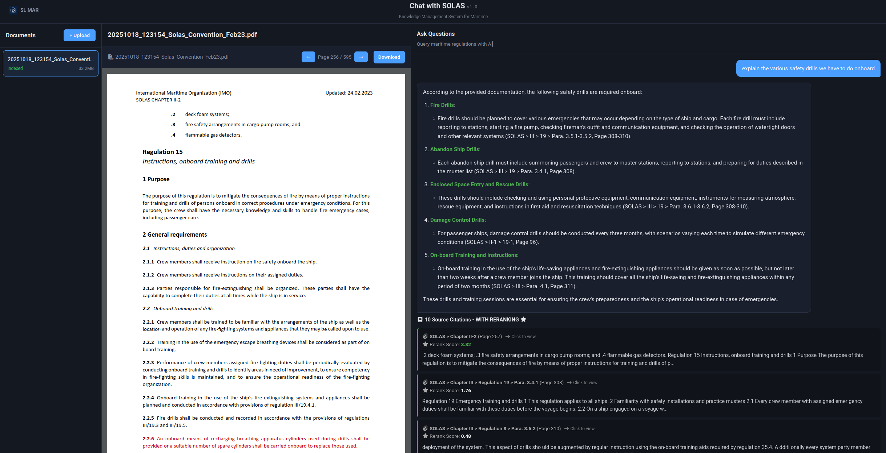

Overview
Chat with SOLAS is an AI-powered Retrieval-Augmented Generation (RAG) system for maritime regulations.
Currently focused on SOLAS conventions, the system uses hybrid search and intelligent reranking to provide accurate answers
with complete source traceability through an interactive conversational interface.
⚠️ This application is in active development. Features and capabilities are being continuously enhanced and refined.
Key Features
🔍 Hybrid Search Pipeline
Combines semantic vector search (OpenAI embeddings) with BM25 keyword matching,
merged using Reciprocal Rank Fusion for optimal retrieval accuracy.
⚡ Cross-Encoder Reranking
Local sentence-transformers reranking (ms-marco-MiniLM-L-6-v2) scores query-document
pairs directly for superior relevance without external API calls.
📄 Interactive PDF Viewer
Click any citation to instantly jump to the exact page in the source PDF.
Full-screen PDF navigation with page controls and zoom.
📚 Hierarchical Citations
Every answer includes complete hierarchical references:
Convention → Chapter → Regulation → Paragraph with page numbers and rerank scores.
Architecture
4-Stage Retrieval Pipeline
Stage 1: Semantic Search - Qdrant vector database with OpenAI text-embedding-3-small embeddings (retrieves 30 candidates)
Stage 2: Keyword Search - BM25 implementation using rank-bm25 (retrieves 30 candidates)
Stage 3: RRF Fusion - Reciprocal Rank Fusion combines both result sets (returns 20 candidates for reranking)
Stage 4: Cross-Encoder Reranking - Local sentence-transformers model scores each query-document pair (returns final top 10)
Smart Chunking with Hierarchy Detection
Text extraction with PyPDF2 followed by intelligent chunking (~2400 chars per chunk, 100-word overlap)
that preserves maritime document structure:
- Detects Convention (SOLAS, MARPOL, STCW)
- Extracts Annex identifiers (Annex I, Annex VI)
- Identifies Chapters (Chapter II-1, Chapter III)
- Parses Regulations (Regulation 15, Regulation 19)
- Captures Paragraphs (Para. 2.1, Para. 3.4.1)
Each chunk stores complete hierarchical path for precise citations.
Technology Stack
FastAPI
React 18
TypeScript
Qdrant Vector DB
OpenAI GPT-4
sentence-transformers
rank-bm25
PyPDF2
PyMuPDF
SQLite
react-pdf
react-markdown
Example Queries
Query: "Explain the various safety drills we have to do onboard"
Retrieved Sources:
• SOLAS > Chapter II-2 > Regulation 15 (Page 257, Rerank: 3.32)
• SOLAS > Chapter III > Regulation 19 (Page 308, Rerank: 1.76)
• SOLAS > Chapter III (Page 310, Rerank: 0.48)
Answer Includes:
✓ Fire drills with specific procedures
✓ Abandon ship drills
✓ Enclosed space entry and rescue drills
✓ Damage control drills
✓ On-board training requirements with timelines
API Endpoints
POST /api/documents/upload → Upload maritime PDF
POST /api/documents/{id}/index → Index document with smart chunking
POST /api/query → Hybrid RAG query with reranking
GET /api/documents → List all documents
GET /api/documents/{id}/preview → PDF preview by page
RAG Configuration
Optimized for Complete Answers
- retrieval_top_k: 10 chunks (retrieves 30 candidates, reranks to top 10)
- llm_max_tokens: 3000 (allows detailed, comprehensive responses)
- chat_model: gpt-4o (premium synthesis of multiple sources)
- embedding_model: text-embedding-3-small (cost-effective, 1536 dimensions)
- temperature: 0.3 (low for accuracy and consistency)
Why Cross-Encoder Reranking?
Traditional bi-encoders (semantic search) encode queries and documents separately, then compute similarity.
Cross-encoders score each query-document pair together, capturing deeper semantic relationships.
Our pipeline uses fast bi-encoders for initial retrieval (30 candidates from 854 documents), then applies a local
cross-encoder to rerank for maximum accuracy. This hybrid approach balances speed and precision without external API costs.
UI Features
Documents Panel
Upload PDFs, view indexing status, file sizes. Click any document to load in PDF viewer.
PDF Viewer Panel
Full-screen PDF rendering with page controls. Click citations from chat to auto-navigate to source page.
Chat Panel
Ask questions in natural language. Answers display with markdown formatting, expandable citations with rerank scores.
Development Notes
Chat with SOLAS evolved from n8n workflows (MC_SOLAS_RAG_Indexing and MC_SOLAS_RAG_Proper)
into a full-stack application with:
- Self-hosted infrastructure (no vendor lock-in)
- Local reranking model (~80MB, CPU-only PyTorch)
- Complete source traceability (every statement cited)
- Extensible to other maritime conventions (MARPOL, STCW, COLREG)
Use Cases
Safety Officers
Quick answers to compliance questions during inspections and audits.
Training Departments
Create accurate training materials with verified SOLAS references.
Ship Operators
Verify regulatory requirements for emergency procedures and equipment.
Compliance Teams
Research regulatory changes and ensure fleet-wide adherence to IMO standards.
Project Status
In active development. Current focus areas:
- ✅ Hybrid search with cross-encoder reranking
- ✅ Interactive PDF viewer with citation navigation
- ✅ Markdown-formatted answers with hierarchical citations
- ✅ Document indexing with smart hierarchy detection
- ⚠️ PDF page number correction (re-indexing required)
- 🔄 Multi-convention support (MARPOL, STCW expansion)
- 🔄 Advanced query expansion and context handling
Technical Highlights
Performance Metrics
- Indexed Documents: 854 chunks from SOLAS Convention
- Average Query Time: ~2-3 seconds (retrieval + reranking + LLM)
- Retrieval Accuracy: Top-10 precision significantly improved with reranking
- Context Window: ~21,600 characters sent to LLM per query
- Answer Completeness: 3000 token budget for detailed responses
Future Roadmap
- Expand to MARPOL annexes (pollution prevention regulations)
- Add STCW certification and training requirements
- Implement query expansion for complex multi-part questions
- Add comparative analysis features (e.g., "Compare fire drill requirements between SOLAS II-2 and III")
- Multi-language support (French, Spanish maritime regulations)
- Export answers to PDF with full citations